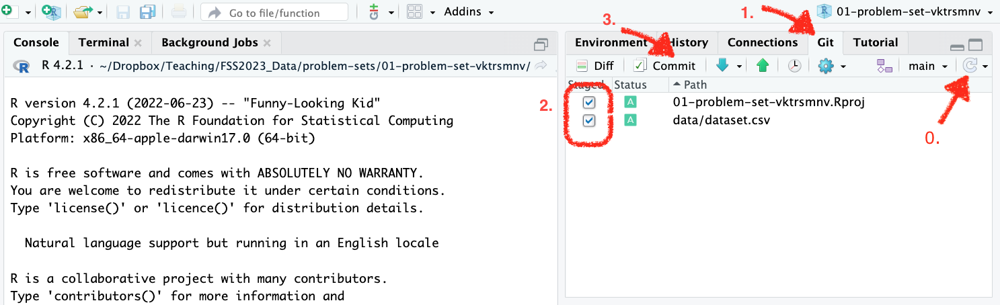

Problem Set 1
Due by 12:00 on Monday, February 20, 2023
This homework helps you with establishing the workflow with GitHub and Rstudio, as well as guides you through the first steps in working with Quarto documents and writing code with R. The guideline is rather detailed, but should you have any further questions or issues, do not hesitate to ask for help at the Discussion forum or during the office hours.
Task 1: Install the software
If you haven’t done so, please install the software following the guidelines on this page. Do this as soon as you have the chance, ideally before Friday so you can come to the office hours if you need help.
Task 2: Load your first homework repo
You will be working on homework assignments in private repositories, which means only you and I have access to the files. Each homework repo will include your GitHub/ILIAS login in the title. You should be able to load this repo into your local machine, make changes to the files there, and have access to uploading things back to GitHub so I can see and grade them.
Get the URL of the repo for homework assignment
Go to the page of our course organization on GitHub and open the repository 01-problem-set-[username]. This repo contains all the relevant materials for your first homework assignment.
Click on the green Code button and copy the HTTPS link for the repo by clicking on the clipboard icon.
Import the repository in RStudio
Open RStudio and select File > New Project > Version Control > Git.
In the final window, paste the repo URL you grabbed from GitHub in the Repository URL window. Click on Browse to select the folder on your computer where you want to store the project. I suggest you set up a folder on your computer for all the class content and always use this as a destination to store your material for the course.
Click on Create Project.
If everything worked fine, you should now have a subfolder 01-problem-set-[username] in the folder our selected when cloning the project.
Task 3: Practice committing to the repo
Before we move to R, let’s try uploading files into GitHub. The process here requires two steps: first, you need to, figuratively, take a snapshot of your project looks like at the moment. This is what a commit command will do. And after that, you will need to upload your changes to GitHub (otherwise, they just stay on your local machine). This is done with the help of push command.
Make some changes
Your first commit will be adding the dataset into the repo:
Create a subfolder named
datain the project folder you just made.Download this
csvfile and place it in that folder:
Now you are ready to make your first commit! Here are the steps you need to follow:
Upload the assignment to GitHub
Click on
Gitin the environment pane on the upper right.Check all boxes that appear in the upper left pane. By doing so, you are telling
gitto take a snapshot of all the files you’ve made changes to.Click on
Commit.

Write a Commit Message in the upper right window. For this task, please use “Added data folder and dataset” as your commit message. Usually, this should describe the work you did since your last commit so that at a later point in time, you can easily keep track of your process.
Click on
Commit.
- If everything worked fine, you should see something similar in a dialog window. This means that you have successfully svaed your work on your computer.
- You can now see that there are commits that have not been uploaded to GitHub thanks to the message on the left. Click on
Pushin order to push the latest saved version to GitHub.
- If everything goes well, you will something resembling this message in a dialog window. You‚Äôve done with the first commit üéâ
Now you can go to the repository on GitHub and check whether it is updated to the most current version of your assignment.
In a few minutes after you pushed, if you have done everything right, you will see the badge “Data folder commit” in the README.md (aka description) part in your repository turning green.1
Task 4: Try working with Quarto document
Now let’s move to the fun part–working in Quarto and writing the R code.
Open the file 01-problem-set.qmd. This is the file that allows you to both write the code and the text, so you can produce well-formatted reports.
The top part of the file is called YAML. It contains the main information about the project.
- Update your first and last name in the YAML. Try
knit-ing the file now–this will produce an HTML file with your name (and the rest of the content).
After that, let’s try writing some code. The code in Quarto documents goes into chunks. The very first chunk you have in the document is usually called setup and it contains all of the preparatory things, such as packages you need to load or other related things.
Let’s start by loading the dataset you downloaded and put into data folder into R. You will work with a csv file, which is not a native R file. This means we need a package to work with it. If you remember from the session, we will be using readr package for this purpose.
Check that
readris being installed withinstall.packagesand loaded withlibrarycommand in thesetupchunk. If it is not, add the code to do this.Load the dataset. To do that, you need to specify the path to the data file relative to the project directory. If the data were right in the project folder, you would write just the name of the dataset. But since we put the data in the subfolder, you need to include it into the path:
data/cars.csv.Inspect the dataset.
Create a new column in the dataset.
Generate the plot. Copy and paste this code into the respective chunk and run the chunk. Explain what you see on the plot in 2-3 sentences. Writing accompanying text is easiest if you are using the Visual editor in RStudio. The interface resembles the one you have in programs like Microsoft Word, so it is quite intuitive to format the text nicely.
Tip: you can use comments inside the code chunks to incorporate notes. Better use the comments for small code-related notes and write descriptions and answer to questions using the regular text option.
Knit the file to PDF. Now let’s try knitting to PDF rather than HTML. This way, you can share the reports files much easier.
Save the
qmdfile. Do not change the name of the file.
Task 5: Commit and push the final result version to GitHub
You’re almost done with the first homework! Now all that’s left is uploading the task back to GitHub. Essentially, you need to repeat the steps from before:
Click on
Gitin the environment pane on the upper right.Check all boxes that appear in the upper left pane. By doing so, you are telling
gitto take a snapshot of all the files you’ve made changes to.Click on
Commit.Write a Commit Message in the upper right window. For this task, please use “Added data folder and dataset” as your commit message. Usually, this should describe the work you did since your last commit so that at a later point in time, you can easily keep track of your process.
Click on
Commit.If everything worked fine, you should see something similar in a dialog window. This means that you have successfully svaed your work on your computer.
You can now see that there are commits that have not been uploaded to GitHub thanks to the message on the left. Click on
Pushin order to push the latest saved version to GitHub.If everything goes well, you will something resembling this message in a dialog window.
Congrats! You are done with the first homework assignment! üéâ
Footnotes
If you think you did everything right (which means you see
datafolder on GitHub) but the badge is red–don’t worry!↩︎